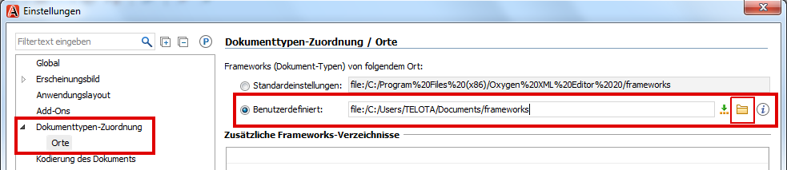
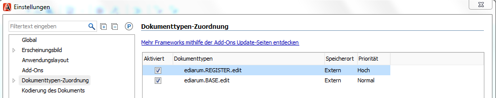
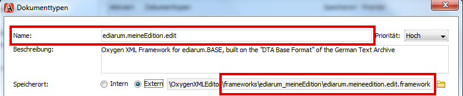

Sie machen die ediarum-Funktionalitäten in Ihrer
Oxygen-Editionsumgebung verfügbar, indem Sie zwei ediarum-spezifische
Oxygen-"Frameworks" einbinden.
Überblick über den Ablauf:
Sie laden sich die beiden
ediarum-Frameworks auf Ihren lokalen Rechner.
Sie ändern den Standardordner, in dem Oxygen XML Author die Frameworks
verwaltet. Dadurch vermeiden Sie Probleme mit Zugriffsrechten seitens des
Betriebssystems (insbesondere Windows).
Sie legen ein eigenes Framework für Ihre Edition an. Sie legen dieses Framework
als eine Erweiterung des ediarum.BASE.edit-Frameworks an,
damit Sie alle Funktionalitäten von ediarum zur Verfügung
haben. Nach Abschluss des Basis-Setups können Sie in diesem Framework Ihre
eigenen Konfigurationen der Editionsumgebung speichern.
Benötigtes Vorwissen:
Grundverständnis von github
Legen Sie in Ihrem lokalen Dateisystem einen Ordner für alle Frameworks
an.
Laden Sie sich die folgenden github-Repositorien in den Ordner, den Sie gerade
angelegt haben (in github: Button Latest release, dann
gezippte Datei lokal speichern und entpacken):
Legen Sie in dem Ordner zusätzlich gleich ein Verzeichnis an, in das Sie später
Ihr editionsspezifisches Framework legen können.
Empfehlung: Behalten Sie im Namen des Ordners ediarum
als ersten Teil bei, um kenntlich zu machen, dass Ihr editionsspezifisches
Framework eine Erweiterung von ediarum ist. Zum Beispiel:
ediarum.meineEdition.edit.
Stellen Sie sicher, dass der Framework-Ordner folgende Struktur hat:
frameworks
ediarum.BASE.edit
css
fonts
icons
resources
schemata
templates
ediarum.REGISTER.edit
css
resources
schema
ediarum.meineEdition.edit
Ändern Sie in Oxygen den Speicherort für
Frameworks, sodass der Speicherort auf den Ordner verweist, der alle
Framework-Ordner enthält:
Wählen Sie in Oxygen das Menü Optionen > Einstellungen aus.
Wählen Sie im nun geöffneten
Einstellungen-Fenster den Eintrag Dokumenttypen-Zuordnung > Orte aus.
Aktivieren Sie die Option
Benutzerdefiniert.
Benutzen Sie das Ordner-Icon, um den Pfad auszuwählen.

Klicken Sie auf OK, um das
Einstellungen-Fenster zu schließen.
Starten Sie Oxygen XML Author neu.
Unter Optionen > Einstellungen > Dokumenttypen-Zuordnung werden die zwei ediarum-Frameworks
angezeigt.

Legen Sie das Erweiterungsframework für Ihre Edition an.
Wählen Sie im Fenster Dokumenttypen-Zuordnung
das ediarum.BASE.edit Framework aus (nicht
doppelklicken!) und klicken Sie auf
Erweitern.
Geben Sie im Feld Name: den Namen für Ihr
editionsspezifisches Framework ein.
Empfehlung: Verwenden Sie denselben Namen, den Sie dem
editionsspezifischen Ordner in Ihrem Dateisystem gegeben haben. Zum
Beispiel: ediarum.meineEdition.edit
Aktivieren Sie für Speicherort: die Option
Extern.
Geben Sie den Pfad bis zu der .framework-Datei an, die innerhalb Ihres
Editionsordners liegt. Zum Beispiel:
ediarum.meineEdition.edit/ediarum.meineEditon.edit.framework.
Benutzen Sie das Ordner-Icon, um die Datei auszuwählen.

Klicken Sie auf OK, um das
Einstellungen Fenster zu schließen.